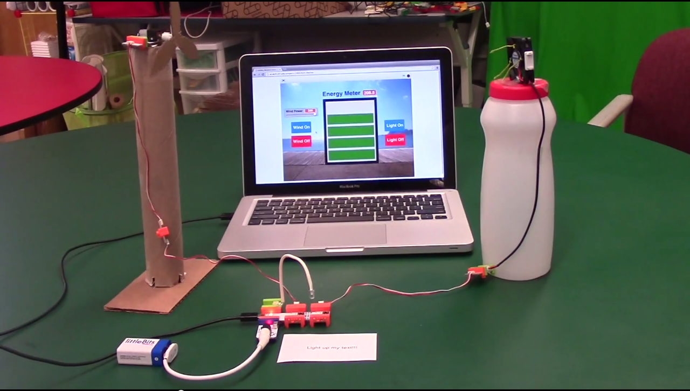
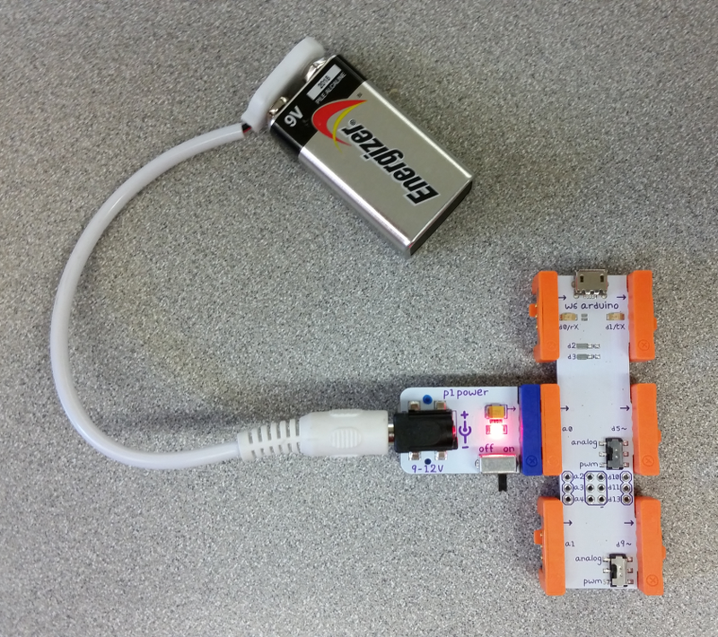
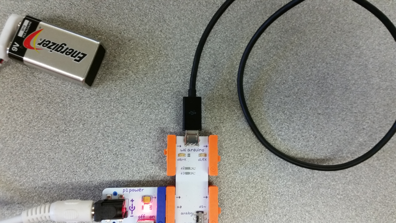
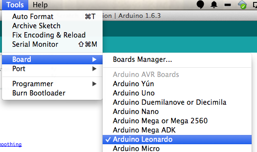
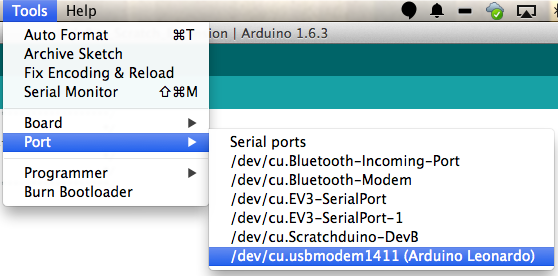
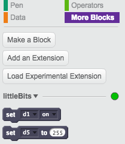

Contents
Quick Start
To use the extension, upload the littleBits_Scratch_Extension.ino to your littleBits Arduino bit, install the Scratch Browser Plugin (see notes below for Firefox and for Chrome), and then open the littleBits extension on ScratchX.org.
Introduction
This Scratch extension allows you to connect your Scratch projects to the physical world using littleBits. Using littleBits you can create new ways to interact with Scratch through the use of inputs and outputs. For example, you might rotate the Scratch cat by turning a dimmer, or make a buzzer go off when you score a point in your game. The possibilities are only limited by your imagination!
Windmill simlulator using littleBits and Scratch.
Equipment
You will need:
- littleBits Arduino bit
- littleBits Power bit
- Some littleBits Inputs and Outputs
- Micro USB Cable
Getting Started
Step 1 - Upload the Firmware
- Install the codebender plugin:
On Chrome/Chromium, install the codebender app in the Chrome Web Store
On Firefox, install the codebender Add-on - (Windows only) install the device drivers
- Connect a Power bit to one of the Arduino's input pins and turn on the Power bit.
 - Connect the Arduino to your computer's USB port
 - Make sure the correct board (Arduino Leonardo) and serial port is selected in the codebender window below and click "Run on Arduino"
On Mac, the serial number will be something like /dev/tty.usbmodem-1511.
On Windows, the serial number will probably be the highest-numbered COM port.
(Or unplug the Arduino, check the menu, and then replug your Arduino and see what new port appears.)
- Download and install the Arduino software (Windows instructions, Mac instructions)
- Connect a Power bit to one of the Arduino's input pins and turn on the Power bit.
- Connect the Arduino to your computer's USB port
- Open the littleBits_Scratch_Extension.ino firmware in the Arduino software

- Select Arduino Leonardo from the Tools > Board menu
 - Select your serial port from the Tools > Port menu.
On Mac, it's something like /dev/tty.usbmodem-1511.
On Windows, it's probably the highest-numbered COM port.
(Or unplug the Arduino, check the menu, and then replug your Arduino and see what new port appears.)
 - Click the upload button

Step 2 - Install the Scratch Extensions Browser Plugin
Step 3 - Load the littleBits extension on ScratchX
Launch the extension by going to the following URL:
http://scratchx.org/?url=http://khanning.github.io/scratch-littlebits-extension/littlebits_extension.jsOn Firefox, you might see "Allow scratchx.org to run "Scratch Device?". Click "Allow...".
You might see another message, "Allow scratchx.org to run plugins?". Set both Adobe Flash and Scratch Device to "Allow and Remember" and click okay.
On Chrome, you'll need to enable NPAPI plugins. Go to chrome://flags/#enable-npapi and click enable:
Then, click "Relaunch Now" button:
Then, when you go to ScratchX.org, you should see a puzzle piece icon with an X on it:  . Click on it and select "Always allow plug-ins on scratchx.org":
. Click on it and select "Always allow plug-ins on scratchx.org":
When you see the indicator light in the "More Blocks" tab turn green your ready to start using the extension!
Step 4 - Have fun and be creative!
A Few Additional Notes:
Some of the input bits need to have power going through them. The Fork bit is very useful for running power to multiple inputs.
If the Arduino bit loses it's connection to the Power bit you will have to wait a few seconds while it reconnects itself with Scratch. The littleBits Mounting Boards or these 3D printed littleBits sandals are very useful for keeping everything connected.
Now take a look at the Scratch Blocks and the example projects to learn how to use the extension.
Scratch Blocks
This is a brief description of each of the Scratch blocks included with the littleBits extension.
Sets one of the output pins (d1, d5, d7) to on (full power) or off (no power).
Sets one of the PWM output pins (d5, d7) to a value between 0 - 255.
0 = no power.
255 = full power.
Boolean block that returns true if an input pin (d0, a0, a1) is on (receiving voltage greater than 3v) and false if the input pin is off (receiving voltage less than 3v).
Reads a value from an analog input pin (a0, a1).
Hat block that executes when an input pin is switched on (receiving a voltage greater than 3v) or off (receiving a voltage less than 3v).
Hat block that executes when an input pin is greater than, less than, or equal to a specified number.
Maps a value between two ranges of numbers.
This comes in handy when you're trying to use an input value (0 - 1023) to set an output value (0 - 255)
Example Projects
- Blink a LED
- Make a LED blink on and off